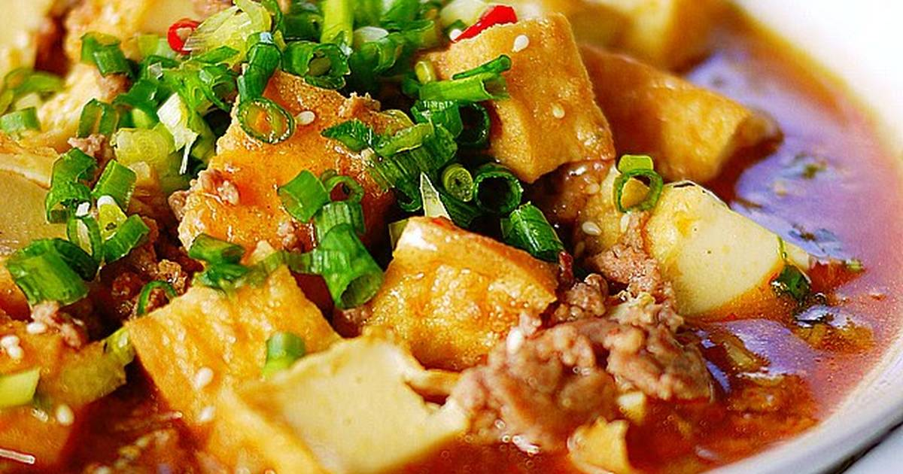

Mapo Tofu

Description
Mapo Tofu is a popular Chinese dish from Sichuan province, but it is also enjoyed elsewhere in Asia. This recipe is a Japanese take on the dish taken from Just One Cookbook, a website that specializes in easy Japanese recipes. This dish quickly entered into my family's dinner menu rotation, as it is simple to make, hearty, and very flavourful. It is not as spicy as the Chinese version, which is perfect for those in my family with lower tolerance for spice, but you can add chili or peppercorns if you'd like.
One ingredient you might have trouble finding is la doubanjiang, which is a spicy fermented broad bean paste. The original recipe uses both la doubanjiang and its non-spicy variant doubanjiang, but I typically substitute the non-spicy paste for other variants, such as Korean soybean paste. However, la doubanjiang provides spicy, salty, and umami flavours, so I highly recommend not substituting this ingredient. You can find it at your local Asian grocery store, and I've even seen it at Walmart. Your efforts will pay off with an easy yet satisfying rice bowl dish!
Ingredients
Note: these are the proportions for 4 servings/bowls of tofu; for a bigger crowd, or if you like your rice bowls with a lot of topping, you should double or even triple the recipe.
- 2 cloves garlic
- 1 knob ginger (1 inch/2.5 cm)
- 2 green onions/scallions
- 400g soft or silken tofu
- 1 tablespoon neutral-flavoured oil (vegetable, canola, etc.)
- 250 grams ground pork (you can use other meat and veggies of your choice
For the Seasonings
- 1 tablespoon la doubanjiang (spicy broad bean paste)
- 1 1/2 tablespoon doubanjiang (broad bean paste) or Korean bean paste (if you want a spicier dish, replace this with an equal amount of la doubanjiang)
- 2 tablespoons mirin
- 1 tablespoon miso
- 1 tablespoon oyster sauce
- 1/2 tablespoon soy sauce
- 1 teaspoon roasted sesame oil
- 1 teaspoon cornstarch or potato starch, dissolved in 4 tablespoons water
Steps
- Combine all ingredients for the seasonings (doubanjiang, mirin, miso, oyster sauce, soy sauce, sesame oil, and cornstarch slurry) in a bowl and mix well together.
- Mince the garlic cloves and ginger finely.
- Cut the green onions in half, separating the whites from the greens. Cut each into small pieces.
- Drain the tofu and cut into 1-inch (2.5cm) cubes.
- In a large frying pan, heat the vegetable oil on medium heat. Reduce the heat to medium-low and saute the garlic and ginger until fragrant. Make sure not to burn your aromatics!
- Once they are fragrant, add the ground pork and break it up with a spatula or wooden spoon. Mix well to coat the meat in the aromatic-infused oil.
- When the meat is no longer pink, add the bowl of seasonings mixture and stir thoroughly to coat the meat. Bring the sauce to a boil.
- Once the sauce is boiling, add the tofu and gently coat it with the sauce. Stir in the whites of the green onions as well. Stir frequently, without mashing the tofu, until it is heated through. I recommend stirring by gently pushing away from you with your spoon or spatula.
- Serve immediately in bowls of hot white rice, garnishing with your desired amount of green onion greens.